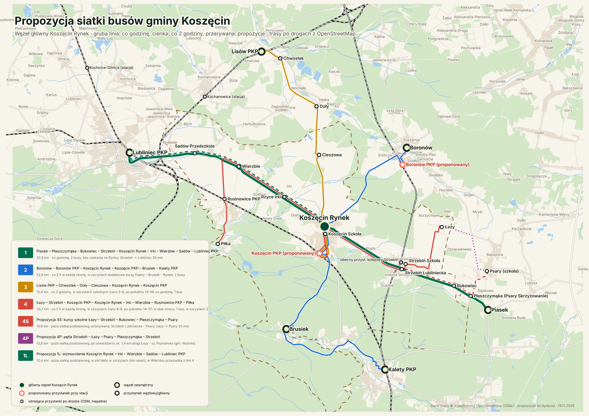

Schemat linii

← przesuń schemat palcem →
Schemat, nie mapa w skali. Gruba linia: co godzinę, cienka: co 2 godziny, przerywana: propozycje poza siatką podstawową. Strzałki: dokąd można jechać dalej z końców linii. Kliknij, aby pobrać schemat w PDF.
Linie
Jak działa węzeł
Każda miejscowość: rano do Lublińca
Dzień roboczy, wariant pełny. Przyjazd do Lublińca PKP o 6:20 (praca na 7:00) i 7:20 (szkoła na 8:00).
| Skąd | Jak jechać | Praca na 7:00 | Szkoła na 8:00 |
|---|---|---|---|
| Sadówlinia 1 | linia 1 | 6:10 | 7:10 |
| Wierzbielinia 1 | linia 1 | 6:05 | 7:05 |
| Rzyce Irkilinia 1 | linia 1 | 6:00 | 7:00 |
| Koszęcin Ryneklinia 1 | linia 1 | 6:03 | 7:03 |
| Strzebiń Lublinieckalinia 1 | linia 1 | 5:45 | 6:45 |
| Bukowieclinia 1 | linia 1 | 5:40 | 6:40 |
| Strzebiń Szkołalinia 4 → w Strzebiniu linia 1 | linia 4 → w Strzebiniu linia 1 | 5:42 | 6:42 |
| Łazylinia 4 → w Strzebiniu linia 1 | linia 4 → w Strzebiniu linia 1 | 5:36 | 6:36 |
| Cieszowalinia 3 → na Rynku linia 1 | linia 3 → na Rynku linia 1 | 5:42 | 6:42 |
| Dołylinia 3 → na Rynku linia 1 | linia 3 → na Rynku linia 1 | 5:37 | 6:37 |
| Brusieklinia 2 → na Rynku linia 1 | linia 2 → na Rynku linia 1 | 5:36 | 6:36 |
| Rusinowicelinia 4 → w Irkach linia 1 | linia 4 → w Irkach linia 1 | 5:33 | 6:33 |
| Piłkalinia 4 → w Irkach linia 1 | linia 4 → w Irkach linia 1 | 5:29 | 6:29 |
Po południu z Lublińca – o której w domu
| Dokąd | Odjazd 14:35 | Odjazd 15:35 | Odjazd 16:35 |
|---|---|---|---|
| Sadów | 14:45 | 15:45 | 16:45 |
| Wierzbie | 14:50 | 15:50 | 16:50 |
| Rzyce Irki | 14:55 | 15:55 | 16:55 |
| Koszęcin Rynek | 15:00 | 16:00 | 17:00 |
| Strzebiń Lubliniecka | 15:10 | 16:10 | 17:10 |
| Bukowiec | 15:16 | 16:16 | 17:16 |
| Strzebiń Szkoła | 15:20 | 16:20 | 17:20 |
| Łazy | 15:26 | 16:26 | 17:26 |
| Cieszowa | 15:10 | 16:10 | 18:10 |
| Doły | 15:15 | 16:15 | 18:15 |
| Brusiek | 15:16 | 16:16 | 17:16 |
| Rusinowice | 15:19 | 16:19 | 18:19 |
| Piłka | 15:23 | 16:23 | 18:23 |
Po lekcjach każda miejscowość jest w domu w niecałą godzinę. Do Rusinowic można też wrócić pociągiem z Lublińca.
Mapa

Gruba linia: co godzinę, cienka: co 2 godziny, przerywana: propozycje poza siatką podstawową. Kliknij, aby otworzyć mapę interaktywną.
Wkrótce: wyszukiwarka „skąd – dokąd”
Aplikacja na telefon z busami gminnymi i pociągami Kolei Śląskich, PolRegio i PKP Intercity. Wpisujesz skąd, dokąd i na którą – dostajesz gotowe połączenie z przesiadkami.